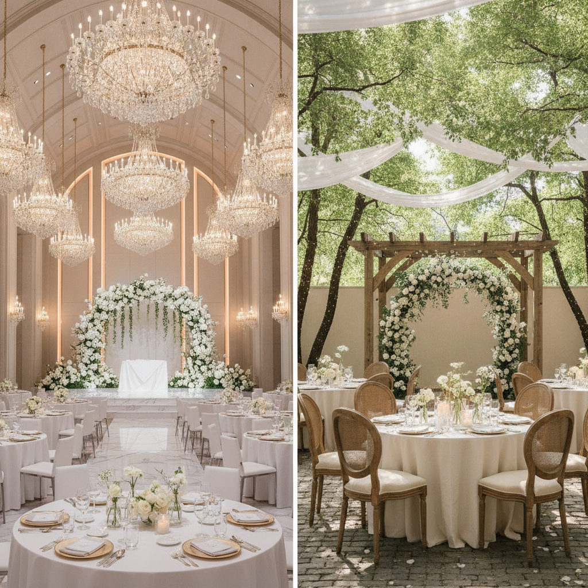
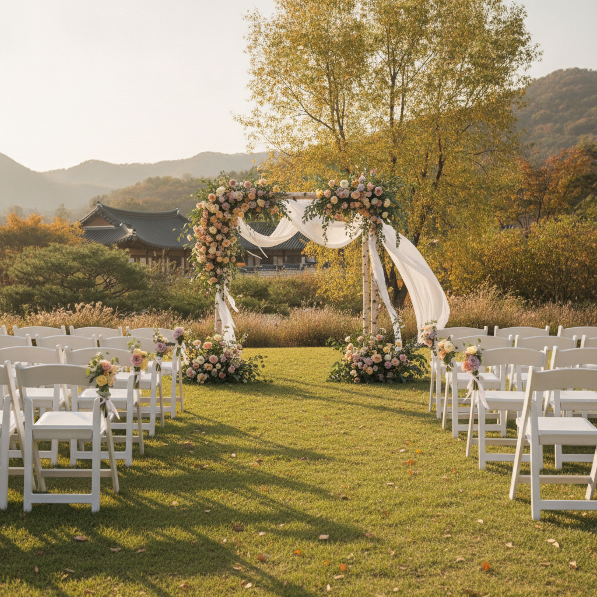

결혼식 웨딩홀 vs 야외 웨딩 vs 스몰웨딩 비용 비교 — 하객 인원별 예산 계산표와 체크리스트
결혼을 준비하는 예비부부 사이에서 천편일률적인 일반 컨벤션 웨딩홀 대신 개성 있는 스몰웨딩이나 로맨틱한 야외 웨딩을 고민하는 분들이 크게 늘었습니다. 흔히 '스몰웨딩은 하객 수가 적으니 비용도 훨씬 적게 들 것'이라고 생각하기 쉽지만, 실제로는 1인당 단가와 별도 디렉팅·생화 연출 비용으로 인해 총예산이 일반 예식보다 오히려 더 많이 나오는 경우가 허다합니다. 본 글에서는 웨딩홀, 야외 웨딩, 스몰웨딩의 실질적인 비용 구조와 하객 규모별(50명~300명) 정밀 예산 계산표를 공개하고, 현명한 선택을 위한 체크리스트를 전해드립니다.

현대적인 대형 웨딩홀과 프라이빗 스몰웨딩 공간의 인테리어 및 연출 분위기 / AI 제작 이미지
01 | 결혼식 형태의 다변화, 왜 예산 계산부터 시작해야 하나
최근의 결혼 준비는 단순히 날짜를 잡고 예식장을 예약하는 수준을 넘어, 부부의 가치관과 양가 하객 규모에 맞춘 '예식 형태의 선택'에서 출발합니다.
많은 신랑 신부가 화려하고 편리한 일반 웨딩홀, 여유롭고 파티 같은 스몰웨딩(하우스 웨딩), 자연광과 푸른 잔디가 어우러지는 야외 웨딩 사이에서 갈등을 겪습니다.
이때 가장 중요한 기준은 막연한 환상이 아닌 '정확한 세부 견적 시뮬레이션'입니다. 대관료, 식대, 생화 연출비, 연출 디렉팅비, 부가세 및 봉사료 등 예식 형태마다 숨겨진 비용 항목이 완전히 다르기 때문에 항목별 단가를 사전에 철저히 비교해야 예산 초과로 인한 스트레스를 피할 수 있습니다.
02 | 일반 컨벤션 웨딩홀의 비용 구조와 보증인원 개념
일반 웨딩홀(호텔 및 전문 예식장)의 핵심 메커니즘은 '최소 보증인원' 제도입니다. 예식장 측에서 토요일 골든타임(11시~14시) 기준 최소 200명에서 250명 이상의 식대를 지불할 것을 계약 조건으로 내겁니다.
대신 홀 대관료는 200만~600만 원 선으로 비교적 표준화되어 있고, 조명, 음향, 기본 꽃장식이 대관료에 일괄 포함되어 있어 추가적인 연출 비용 부담이 적습니다.
하객 수가 200명 이상으로 많을수록 1인당 분담 대관료가 낮아져 규모의 경제가 발생하지만, 하객이 100명 안팎인 신랑 신부에게는 오지 않은 하객의 밥값까지 물어내야 하므로 매우 불리한 구조입니다.
03 | 스몰웨딩(하우스 웨딩)의 매력과 숨겨진 추가 비용의 진실
50명에서 100명 안팎의 직계 가족과 절친한 지인만 초대하는 스몰웨딩은 3~4시간에 걸친 여유로운 파티식 진행이 가능하다는 독보적인 장점이 있습니다.
그러나 "하객이 적으니 결혼 비용이 반값으로 줄어들 것"이라는 기대는 현실과 정반대인 경우가 많습니다. 스몰웨딩 전문 베뉴(하우스, 한옥, 갤러리)는 하루에 1~2팀만 받기 때문에 순수 대관료만 300만~700만 원에 달합니다.
여기에 맞춤형 공간 기획을 위한 웨딩 디렉팅비(150만~300만 원)와 홀을 채우는 커스텀 생화 장식비(300만~600만 원 이상)가 별도 필수 항목으로 추가됩니다. 식대 역시 뷔페보다는 양식 코스나 프리미엄 케이터링으로 진행되어 1인당 7만~12만 원 선으로 일반 웨딩홀(5만~7만 원)보다 훨씬 높게 형성됩니다.

자연광과 야외 잔디밭, 플라워 아치가 어우러진 가을 야외 웨딩 베뉴 / AI 제작 이미지
04 | 로맨틱한 야외 웨딩의 현실 — 대관료·플라워 디렉팅·우천 대비
야외 잔디밭이나 리조트 정원에서 진행되는 야외 웨딩은 영화 같은 아름다운 사진을 남길 수 있어 많은 신부들의 로망입니다.
하지만 야외 웨딩은 3가지 유형 중 비용 변동성과 리스크가 가장 큽니다. 텅 빈 야외 공간에 버진로드, 하객 의자, 음향 장비, 발전차, 차양막 등을 바닥부터 모두 세팅해야 하므로 설치·철거 인건비와 플라워 비용만 500만~800만 원에 이릅니다.
더욱이 당일 비나 강풍이 불 경우를 대비하여 실내 백업 홀을 동시에 계약(백업 비용 100만~200만 원 추가)하거나 대형 어닝 텐트를 설치해야 하는 등 예비비 지출이 반드시 수반됩니다.
05 | 하객 인원별(50명·100명·200명·300명) 총 예산 비교 계산표
각 예식 형태별 실질적인 견적 수준을 객관적으로 비교하기 위해 2026년 수도권 기준 평균 단가를 반영한 총비용 시뮬레이션 표를 정리하였습니다.
| 구분 |
하객 50명 (초소형) |
하객 100명 (스몰) |
하객 200명 (일반 표준) |
하객 300명 (대형) |
| 일반 컨벤션 웨딩홀 |
진행 불가 (보증인원 미달) |
비추천 (보증 200명 강제) |
약 1,800만 ~ 2,300만 원 |
약 2,400만 ~ 3,000만 원 |
| 스몰(하우스) 웨딩 |
약 1,400만 ~ 1,800만 원 |
약 1,800만 ~ 2,400만 원 |
약 2,700만 ~ 3,500만 원 |
수용 불가 (공간 협소) |
| 야외 가든 웨딩 |
약 1,600만 ~ 2,000만 원 |
약 2,100만 ~ 2,700만 원 |
약 2,800만 ~ 3,700만 원 |
약 3,500만 ~ 4,500만 원 |
위 계산표에서 보듯 하객 100명 기준으로 스몰웨딩의 총예산(약 2,000만 원 안팎)은 일반 웨딩홀의 200명 보증 총비용과 맞먹습니다. 즉, 하객 1인당 투입되는 예식 비용은 스몰웨딩이 일반 웨딩홀의 약 2배에 달한다는 결론이 나옵니다.
06 | 스드메(스튜디오·드레스·메이크업) 패키지 vs 개별 준비 비용 차이
예식장 형태는 스드메 선택에도 직접적인 영향을 미칩니다.
일반 컨벤션 웨딩홀은 어두운 홀 조명과 긴 버진로드에 맞추어 비즈 장식이 화려한 풍성한 벨라인이나 A라인 드레스를 선호하며, 웨딩홀 패키지나 플래너 제휴 스드메(평균 250만~350만 원)로 묶어 계약하는 것이 가장 경제적입니다.
반면 야외나 스몰웨딩은 자연광 아래서 자유롭게 움직여야 하므로 가벼운 실크 슬림 드레스나 빈티지 드레스를 입어야 어울립니다. 이 경우 정형화된 패키지보다는 전문 드레스 샵 대여와 프리랜서 헤어변형, 야외 스냅 촬영을 개별 섭외(워킹/커스텀)하게 되며, 이로 인해 스드메 총비용이 400만~600만 원 선으로 상승하는 경향을 보입니다.
07 | 식대 단가와 음주류 포함 여부, 부가세·봉사료 확인 요령
예식 비용의 60~70%를 차지하는 식대를 계약할 때 반드시 짚고 넘어가야 할 3대 세부 항목이 있습니다.
첫째, 부가가치세(10%)와 봉사료(3~5%) 포함 여부입니다. 견적서에 '식대 65,000원'이라 적혀 있어도 부가세·봉사료 별도일 경우 실제 결제 금액은 1인당 74,750원으로 껑충 뛰게 됩니다.
둘째, 음료 및 주류의 과금 방식입니다. 최근에는 '음주류 무제한 포함'으로 1인당 식대에 녹여 계약하는 곳이 많지만, 병당 정산(소주·맥주 병당 6,000~8,000원) 방식인 경우 예상치 못한 100만~200만 원의 추가 식대가 발생할 수 있습니다.
셋째, 소인(어린이) 식대 적용 나이 기준(보통 미취학 아동 무료, 초등생 50% 할인)을 사전에 명문화해 두어야 합니다.
08 | 축의금 회수율과 하객 규모에 따른 실질적인 본인 부담금 분석
결혼식 총지출에서 들어온 축의금을 뺀 금액이 실제 신랑 신부의 순수 '본인 부담금'이 됩니다.
· 일반 웨딩홀 (하객 200~300명): 부모님의 직장 동료, 친척, 지인 등 보편적 관계의 하객이 대거 참석하여 1인당 평균 축의금이 7만~10만 원 선으로 형성됩니다. 총비용 2,500만 원 중 축의금으로 2,000만~2,500만 원 이상이 회수되어 실질적인 자비 부담금은 0원~500만 원 내외로 방어되는 경우가 많습니다.
· 스몰웨딩 (하객 50~100명): 정말 가까운 지인들만 모이므로 1인당 축의금은 10만~20만 원으로 다소 높지만, 모수(하객 수) 자체가 적기 때문에 총 축의금은 1,000만~1,200만 원 수준에 그칩니다. 총비용이 2,000만 원이라면 본인들이 순수 현금으로 메워야 하는 적자 부담금은 800만~1,000만 원에 달합니다.
따라서 스몰웨딩은 "돈을 아끼기 위한 결혼"이 아니라 "내 돈을 더 들여 소중한 분들을 극진히 대접하는 프리미엄 프라이빗 파티"라는 인식 전환이 필수적입니다.
09 | 예식 장소 계약 시 위약금 및 필수 특약 문구 점검법
공정거래위원회 예식장 표준약관에 따르면 예식일 90일 전까지 계약을 해제할 경우 계약금 전액을 환불받을 수 있습니다. 그러나 인기 베뉴들은 자체 약관을 내세워 취소 위약금을 과다 책정하는 경우가 있으므로 계약서 작성 시 특약을 꼼꼼히 확인해야 합니다.
✍️ 계약서에 반드시 넣어야 할 보호 특약 예시
· "천재지변, 감염병 확산, 정부의 집합 제한 등 불가항력적 사유 발생 시 위약금 없이 계약을 변경하거나 해지한다."
· "보증인원은 예식 14일 전까지 상호 협의하에 ±10% 범위 내에서 최종 조정할 수 있다."
· "야외 예식의 경우 우천 예보 시 예식 전일 18시까지 실내 연회장으로 전환 결정을 통보하며 추가 위약금을 부과하지 않는다."
10 | 후회 없는 결혼식 형태 결정을 위한 최종 점검 체크리스트
양가 부모님과의 의견 조율과 현실적인 예산 집행을 위해 계약 전 아래 질문들을 함께 검토해 보세요.
📋 결혼식 형태 최종 선택 체크리스트
1. 양가 부모님의 하객 초대 범위: 부모님이 퇴직 전이거나 교우 관계가 넓어 하객 150명 이상 초대를 희망하신다면 스몰웨딩은 갈등의 씨앗이 됩니다. 부모님 의사를 최우선 청취하세요.
2. 예산 적자 감당 여부: 축의금으로 식대와 대관료가 전액 상쇄되지 않더라도 순수 자비로 500만~1,000만 원을 지출할 준비가 되어 있는지 확인하세요.
3. 대중교통 접근성과 주차 대수: 스몰웨딩 베뉴나 야외 정원은 외곽에 위치한 경우가 많습니다. 셔틀버스 운행 여부와 최소 50대 이상의 주차 공간이 확보되어 있는지 검토하세요.
4. 하객 연령대 배려: 야외나 계단이 많은 장소는 고령의 친척 어르신들이 이동하기 불편할 수 있습니다. 엘리베이터와 경사로 시설을 확인하세요.
#결혼식비용비교
#웨딩홀견적
#스몰웨딩비용
#야외웨딩예산
#웨딩홀보증인원
#하우스웨딩
#결혼식식대
#스드메패키지
#축의금회수율
#결혼준비체크리스트